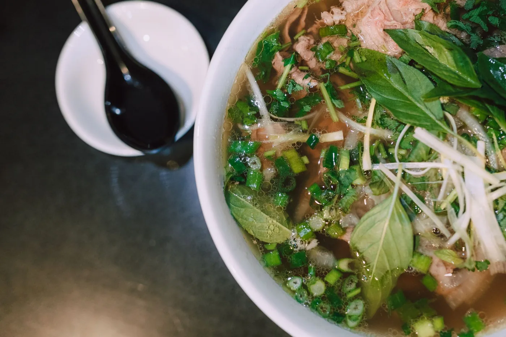
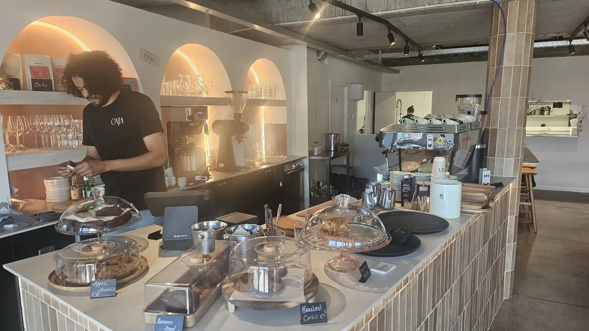
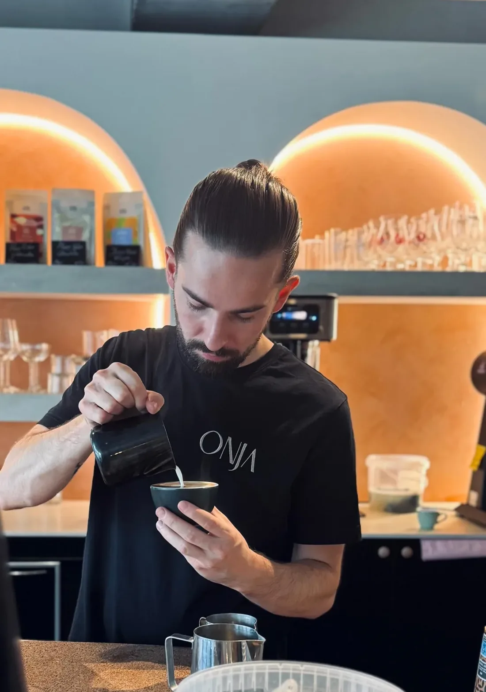
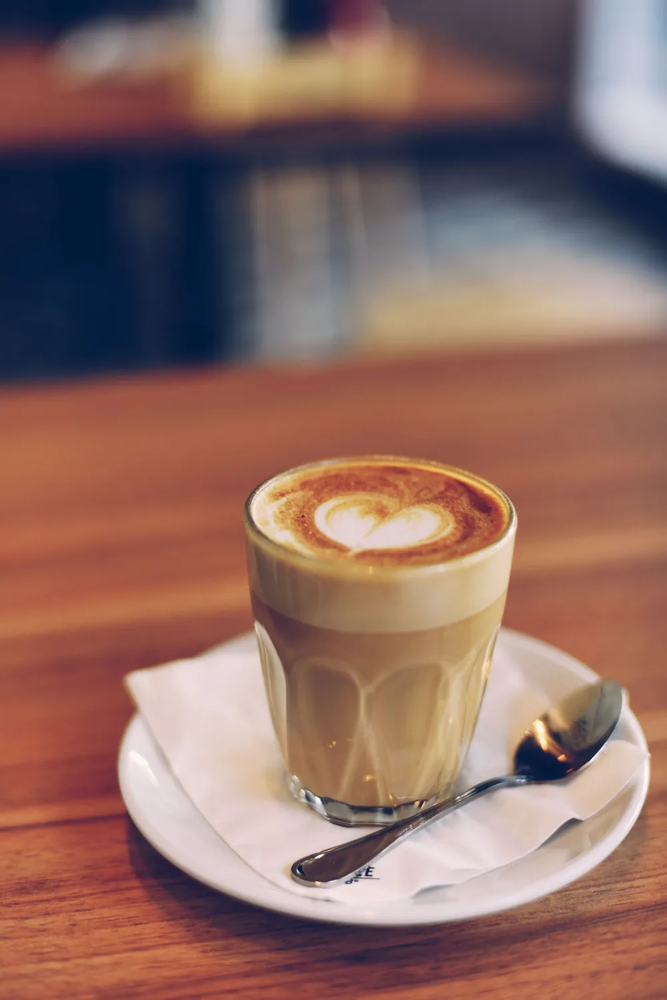
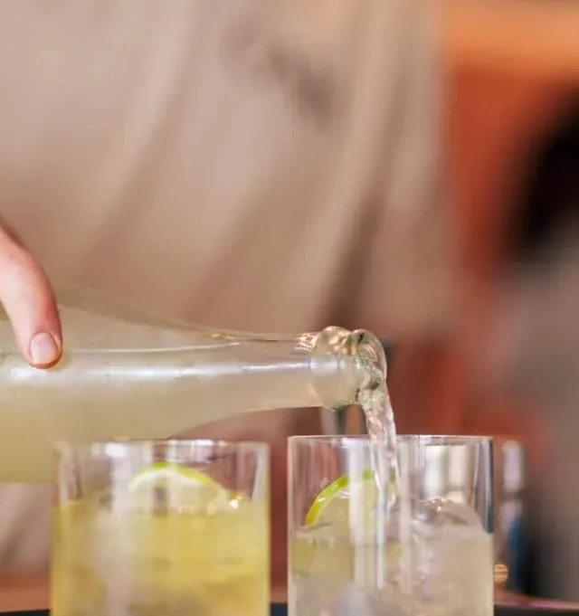
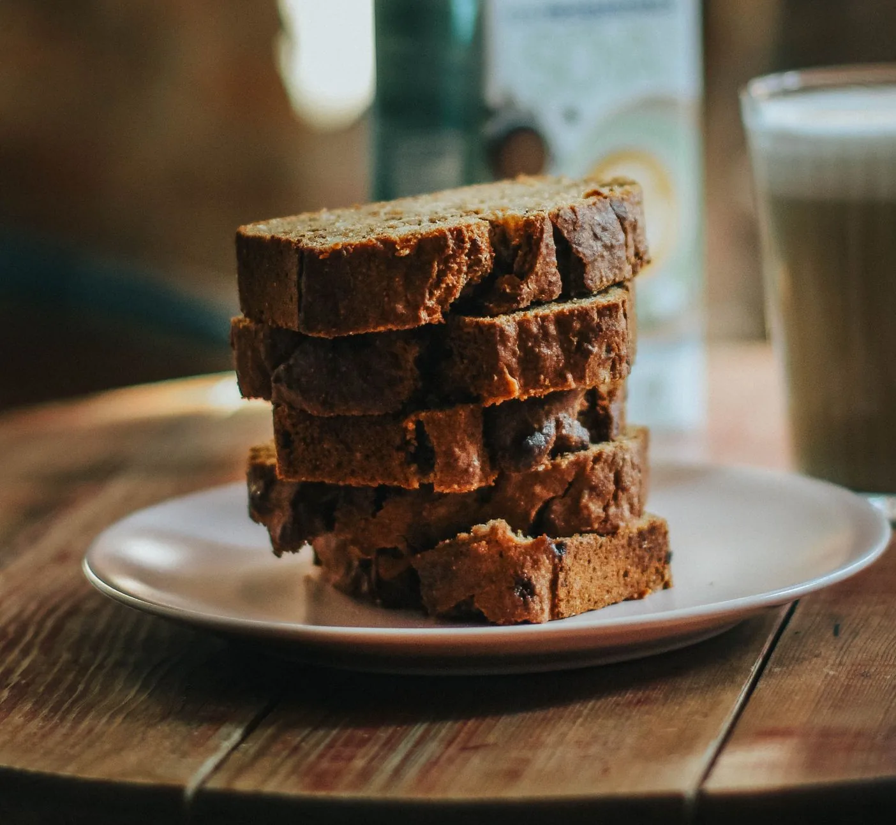
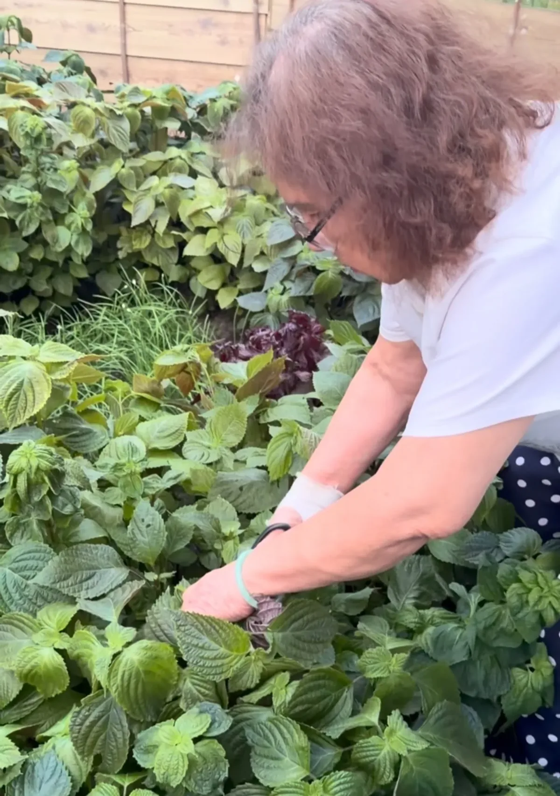
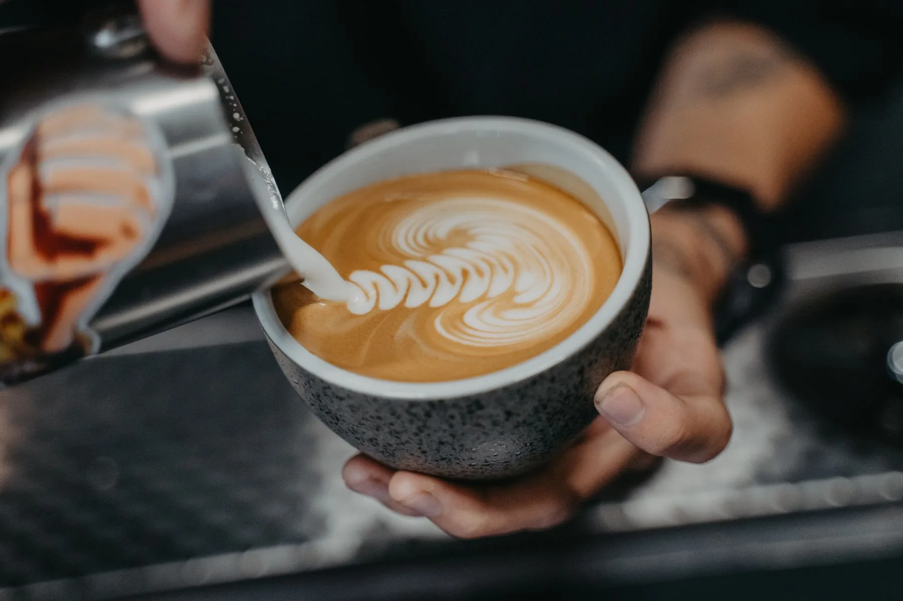

Wekelijkse specialanders
Ontbijt & lunch
Met een Aziatische twist. Elke week iets anders, zoals pho bo of bun bo.

Specialty coffee aan de Diksmuidekaai, met ontbijt en lunch met een Aziatische toets en iets zoets van de toog.
Reserveren hoeft niet, loop gewoon binnen.
Jeroen was sommelier in de fine dining, tot de koffie het won. Bij ONJA is hij mede-eigenaar en head barista, en dezelfde aandacht voor smaak vind je terug in elke kop.
Daarbij hoort eten met een Aziatische twist, van ontbijt tot lunch. Gewoon goed, en altijd met iets verrassends op het bord.

Kom voor een snelle espresso of blijf hangen voor de lunch. De specials wisselen elke week, dus volg ons gerust op Instagram.

Wekelijkse specialMet een Aziatische twist. Elke week iets anders, zoals pho bo of bun bo.

Specialty coffeeEspresso, flat white of filter. Liever plantaardige melk? Geen probleem.

Uit MarkeVan Vira Kombucha: altijd een vaste smaak en eentje van het seizoen.

Van de toogAppelcrumble, banana bread of een hazelnootcookie. Wat er staat, wisselt.
De specials en zoetigheden wisselen. Op Instagram zie je als eerste wat er op de toog staat.
De keuken is open tot 14u, koffie en zoetigheden tot sluitingstijd.

Sommige kruiden komen niet van de groothandel, maar uit de tuin van Bà Ngoại. Ze is een van de OG's van ONJA en plukt ze zelf.
Een stukje uit haar tuin, gewoon bij ons op het bord.

Nee, we werken zonder reservaties. Loop gewoon binnen wanneer het jou past.
De keuken is open tot 14u. Daarna kan je nog altijd terecht voor koffie, kombucha en iets zoets, tot 17u30.
Ja. Zeg gewoon aan de toog wat je wil en we maken je koffie zoals jij hem graag drinkt.
Zeker! Brave viervoeters zijn welkom.
Ja, je raakt makkelijk binnen. Heb je iets extra nodig? Stuur ons gerust een bericht.
Je vindt ons aan de Diksmuidekaai. Kom alleen, met vrienden of met je laptop.
Ik maakte deze demo voor jullie om te tonen wat er kan. Na een kort gesprek maak ik er iets veel persoonlijkers van, helemaal naar jullie wens.
Vrijblijvend. Ik kom langs of we bellen.
Op maat, op jullie eigen domein.
Geen voorschot. Jullie betalen pas als alles klaar is.
Hosting, domeinnaam en kleine wijzigingen, zoals nieuwe openingsuren.
Omdat een voorbeeld meer zegt dan een mail. Zo zien jullie meteen wat er kan, en het kost jullie niets.
Nee. Het gesprek is vrijblijvend. Vinden jullie het niks, dan is het daarmee gedaan.
Na ons gesprek staat jullie site binnen 10 tot 14 dagen online.
Zeker. Jullie domeinnaam kan gewoon blijven, de nieuwe site komt in de plaats van de oude.
Nee, dat doe ik op basis van ons gesprek. Eigen foto's zijn mooi meegenomen, maar niet nodig om te starten.